| 日付 | 2017年5月3日（水） - 2017年5月6日（土） | ||
|---|---|---|---|
| 山域 | 東北の山 | ||
| メンバー | 家族（妻、長女・6歳、長男・3歳） | ||
| 山行形態 | 子連れ3泊4日ホテル泊 | ||
| アクセス | 車、リフト | ||
| ルート (Map) |
|
2日目
合宿客で食堂が埋まっていて朝食が遅れたため、少し外を散歩することにする。
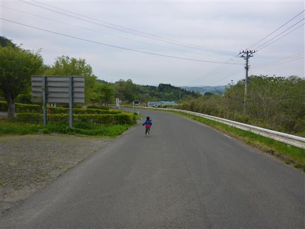
空は薄らと白い雲がかかっているが、蔵王山が良く見えている。
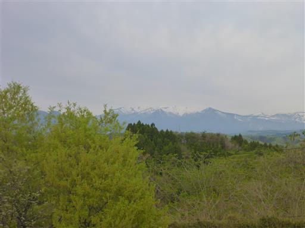
朝食をとったら宿のチェックアウトを済ませ、本日の目的地である泉ヶ岳に向かう。
車を走らせると泉ヶ岳が見えてくる。里から良く目立つ山だ。
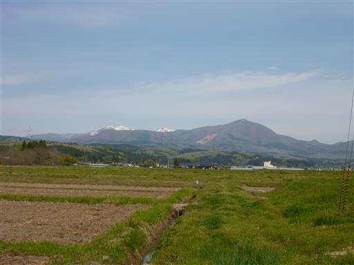
泉ヶ岳の駐車場に到着。標高530m。
駐車場には驚くほど多くの車が停まっている。
泉ヶ岳は仙台市にあり、仙台市民に親しまれている山として有名だ。

スキー場を登っていく。もう雪は全くない。
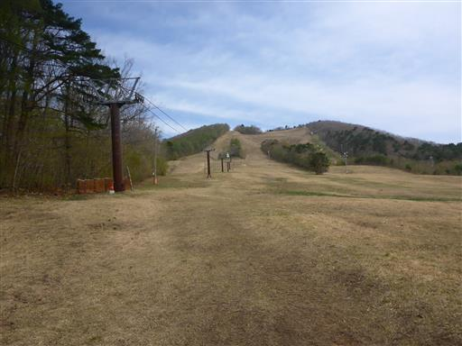
いきなりかなりの急斜面。見晴らしの良い道をゆっくり登っていく。
背後に広がるのは仙台平野だ。
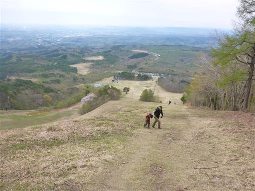
スキー場の上部に辿り着くと、ここからは登山道らしい道になる。
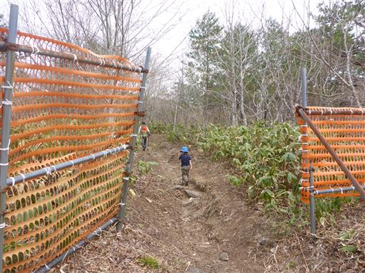
しばらく登ると開けた場所に出てくる。目の前に泉ヶ岳の山頂部が横たわっている。
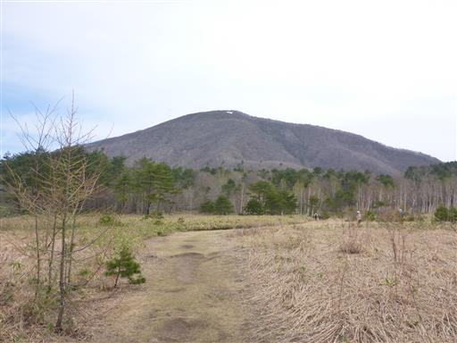
この辺りは白樺が見られる。
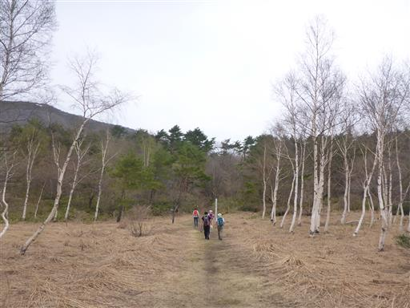
足元にショウジョウバカマの花があちらこちらに咲いている。
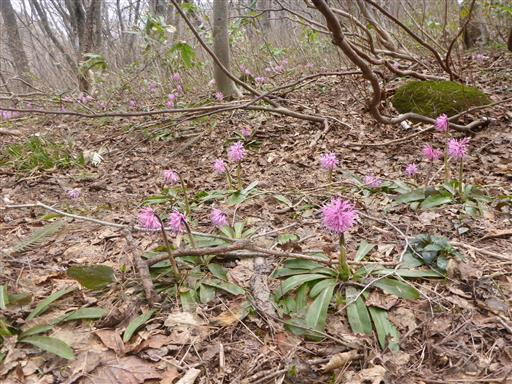
右手に見えるのは岡沼。雪解け時期の春だけ現れる沼だ。
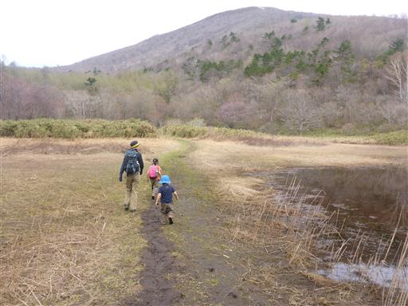
登山道は再び傾斜を増す。もうひと踏ん張りだ。
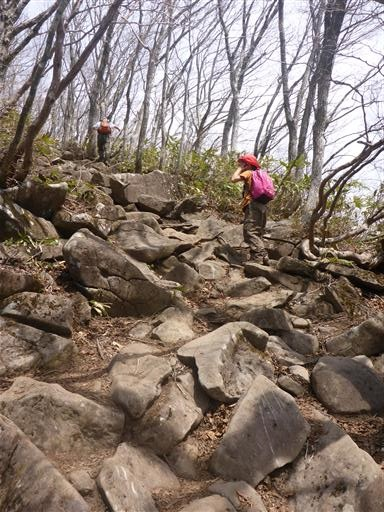
途中で一箇所展望が広がる。山頂からの景色が楽しみだ。
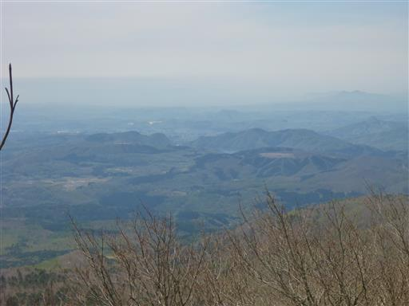
山頂に近くなると、登山道は泥んこだらけになる。
雪解け水の影響で、非常に登りにくい。
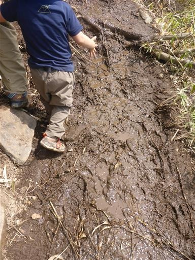
そして登山道に雪が現れる。
雪はもう懲り懲りだったのだが、また雪山登山になってしまった。
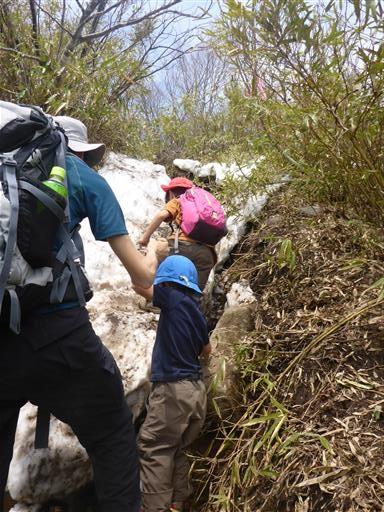
山頂が見えてあと20mというところで、疲れた息子が歩かなくなり「抱っこ」と言い出す。
娘が手をつないでくれて、ようやく歩き出す。
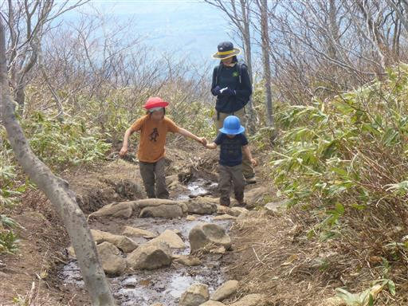
全員最後まで歩き切り、無事泉ヶ岳山頂に到着する。標高1175m。
標識は最高地点より少し低い場所にある三角点の標高を示している。

山頂は大勢の登山者で大いに賑わっている。子供の数も多い。
残念なことに山頂からはほとんど展望が開けない。
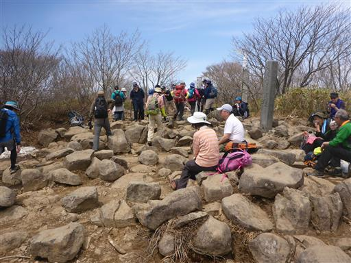
昼食後、少し北に移動してみると展望の広がる場所が見つかる。
目の前に見えるのは船形山。非常に立派な山容だ。
多くの登山道がある山だが、どのコースもロングコースで容易には登れない。
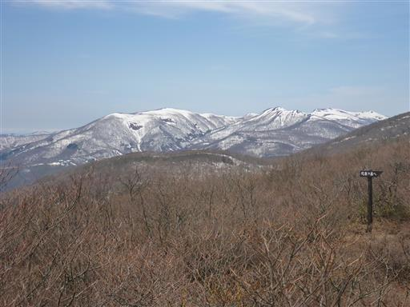
右手に見えるのは二口山塊の山々、そして左には昨日訪れた蔵王連峰が見えている。
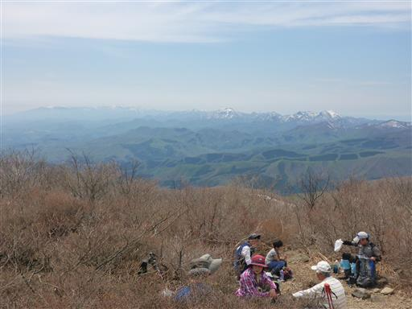
遠くの方にぼんやりと見えている雪山は朝日連峰だ。
晴れてはいるが、昨日よりは景色が霞んでいる。
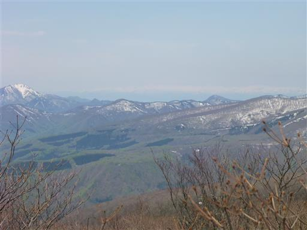
展望を堪能したら下山を開始する。
登山道がたくさんある山なので、登りとは別の水神コースを下る。
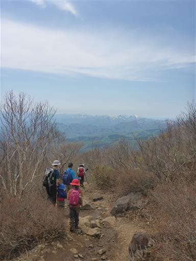
しばらく下ると展望の良い場所に出てくる。ここでも多くの登山者が休憩している。
登りに使ったカモシカコースより、こちらの水神コースの方が人気のようだ。
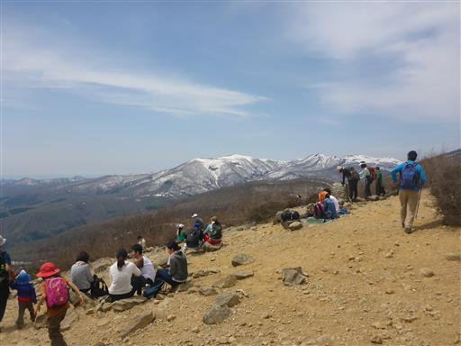
滑りやすい砂の急斜面を下っていく。
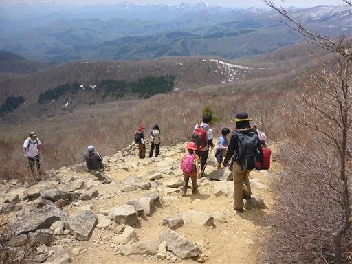
所々で雪が残る登山道はぬかるんでいて、人も多いため歩きにくい。
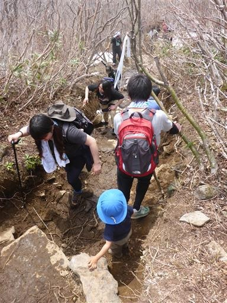
道端にはカタクリの花がたくさん咲いている。
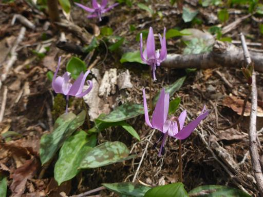
水神と書かれた石碑に到着。
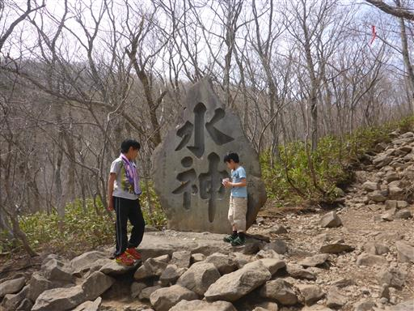
休憩するのによいスポットのため、ここでおやつ休憩をとる。
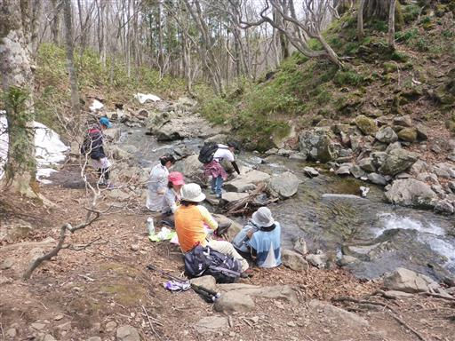
子供たちは川の水に手を付けて遊んでいる。
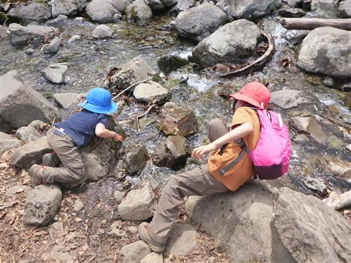
地面から水がしみ出している。結構な水量だ。
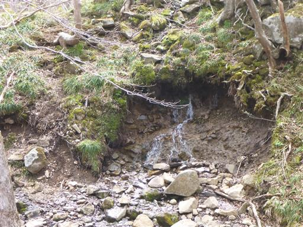
ここから先は林道のような歩きやすい道が続く。
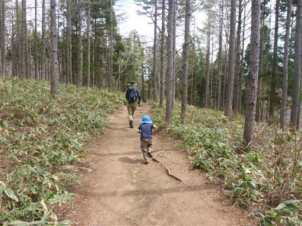
ニリンソウの花が咲いている。カタクリと並んで春を代表する野花だ。
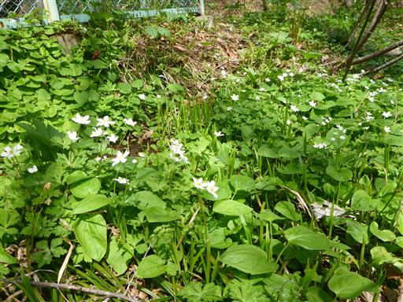
駐車場近くのキャンプ場に下山。
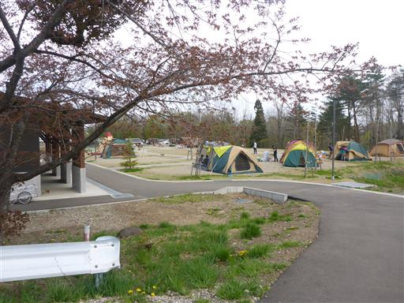
頑張って歩いたご褒美に、ソフトクリームを買って食べる。
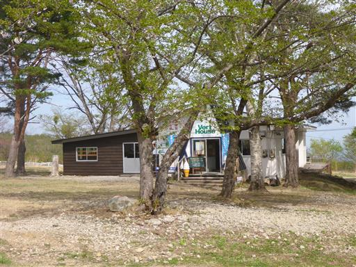
空を見上げるとパラグライダーが飛んでいる。
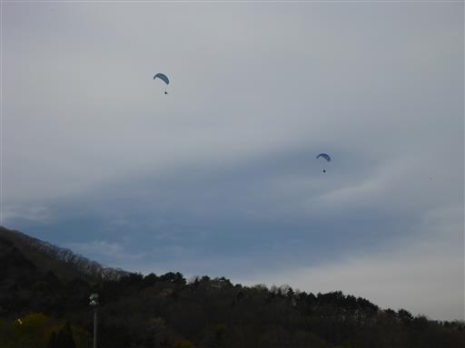
スキー場、パラグライダー離陸場、登山道、キャンプ場など様々な
アクティビティが揃っているこの山は、まさに仙台市民の憩いの山だ。
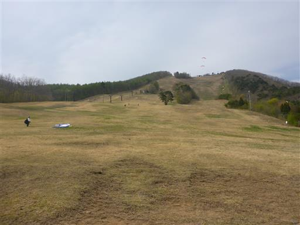
泉ヶ岳を下山後、時間がまだ少し余っているため、蔵王に戻って三階の滝を見に行くことにする。
本当は昨日寄るつもりだったのだが、時間がなかったため割愛していた。
移動距離は長いが、ちょうど子供の昼寝時間にあてられるため都合が良い。
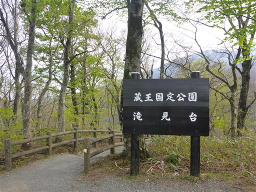
滝見台は駐車場のすぐ傍にある。
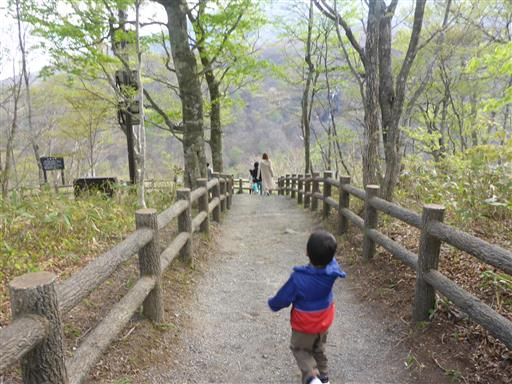
滝見台から望む三階の滝。
落差181m、三段になって落ちる滝は立派ではあるが、遠すぎて迫力に欠ける。
息子は「今からあそこに行こう」と言っているが、叶わぬ望みだ。

ここからはもう1つ大きな滝を望むことができる。落差54mの不動滝だ。
こちらの方が水量が多そうだが、いずれにせよ遠すぎる。
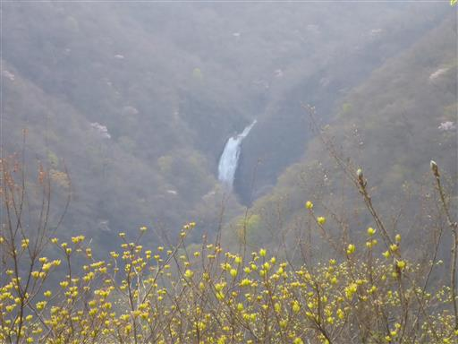
滝を見学したら本日の宿「岩盤浴すみかわ」に移動する。
蔵王の遠刈田温泉から少し離れた場所にある宿だ。
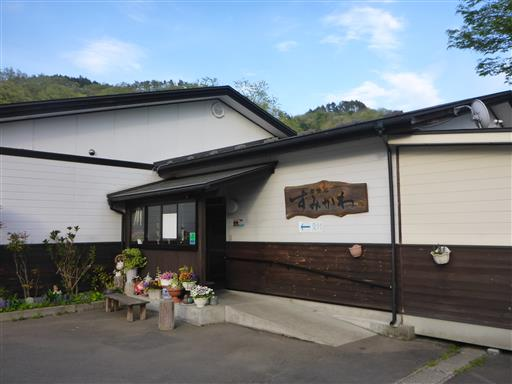
1件1件コテージのように独立した建物になっている、非常に変わった造りの宿だ。
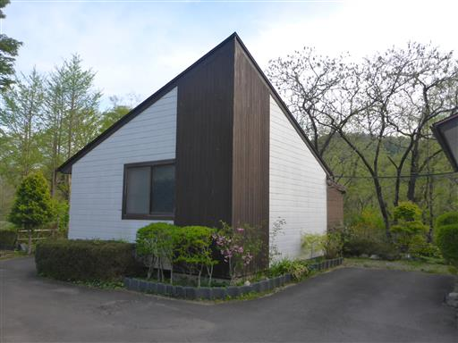
中は広くてきれい。子供たちは走り回って遊んでいる。
ここで2泊する予定だ。